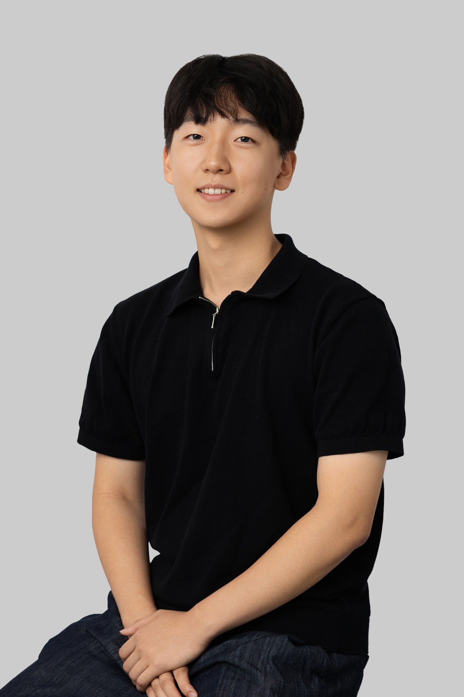

Jongbin
Kim
PhD Candidate · Shoichet Lab · UCSF
I work on molecular docking, computational chemistry, and AI drug discovery: better ways to pick the right molecules out of billion-compound virtual screens.
See the researchResearch
What I'm working on.
-
01
Sharper scoring for billion-scale docking
Bringing ligand–water van der Waals interactions and a physics-informed neural network model (AIMNet-x2D) into the UCSF DOCK scoring function, to improve hit prioritization in billion-scale virtual screens.
-
02
Docking without the cluster
Building a Python interface and a laptop-deployable version of UCSF DOCK3.8, so researchers can run and customize docking workflows without high-performance computing infrastructure.
-
03
Putting co-folding to the test
Prospectively benchmarking protein–ligand co-folding methods across Mac1–ligand complexes and three virtual screens, to see how much they help structure-based drug design.
Selected work
Papers & patents.
One paper from the PhD so far, and two antibody patents and a funded program from three years in biotech.
- 2026 Large scale prospective evaluation of co-folding across hundreds of Mac1 ligand complexes and three virtual screens eLife 15:RP110475 · Co-first author
- 2024 Anti-CD200R1 and Use Thereof Patent WO2024/248532 A1 · Co-inventor
- 2024 Anti-ROR1 Antibody and Use Thereof Patent WO2024/025343 A1 · Co-inventor
-
2023 AMB001, an immunosuppressive monoclonal antibody US$1M from the Korea Drug Development Fund · Led the proposal

PhD Candidate · UCSF
Jongbin Kim
About
Chemical engineer by training, assay scientist for three years, now building computational tools for drug discovery.
I studied chemical engineering at Trinity Hall, Cambridge (B.A./M.Eng., First Class Honors), then spent three years at Aimed Bio in Seoul as lead scientist on the assay development team, working on antibody programs, a brain shuttle platform, and screening assays for antibody–drug conjugates.
Since 2024 I've been a Ph.D. candidate in Pharmaceutical Sciences and Pharmacogenomics at UCSF, in Brian Shoichet's lab.
Outside research, I'm open to consulting students. I've guided applicants into top-rated universities, and I can help with applications to Oxbridge and the Ivy League, as well as A Level, IB and SAT preparation in Physics, Chemistry, Mathematics and Further Mathematics. Get in touch if that's you.
Contact
Let's talk.
Open to collaborations, questions about the work, and good conversations about docking and drug discovery.
jongbinkim0213@gmail.com